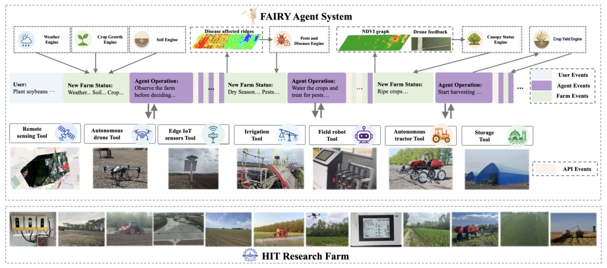
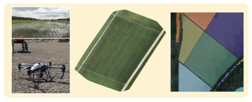
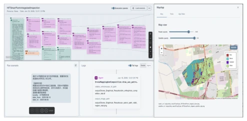
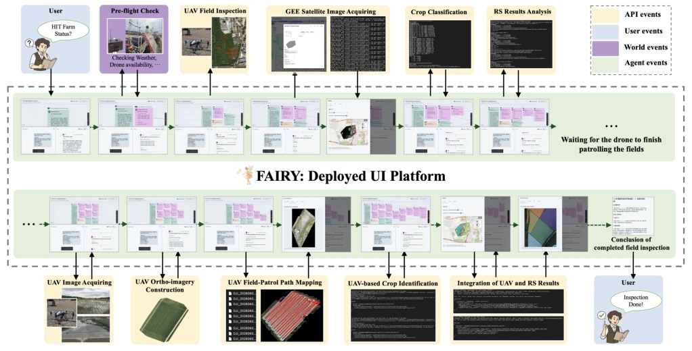
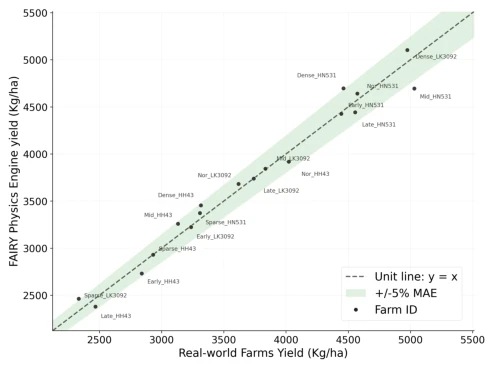
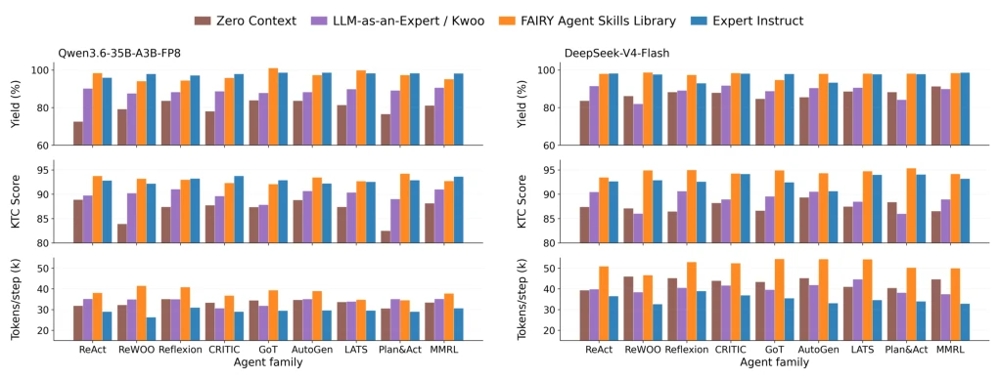
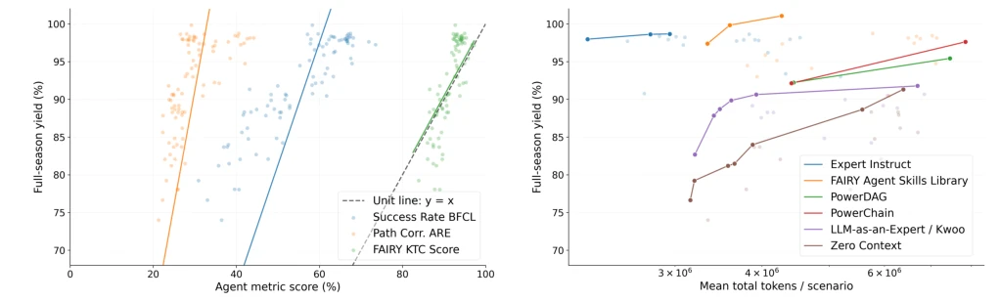

This paper relocates large model Agents from the cloud to black soil fields, developing a FAIRY system. Highlights include the 'Everything is Event' architecture and physics engine calibration, enabling Agent decisions to align with crop growth rather than arbitrary commands. However, criticisms are obvious: without Expert Instruct, large models still 'fail' in long-cycle tasks, with yield loss rates reaching 22%, indicating that relying purely on LLM reasoning for agriculture is too idealistic. Additionally, multi-agent collaboration (A2A) instead increases coordination costs, consistent with many research conclusions, but quantified clearly here. The KTC metric is an ingenious design, predicting yield better than simply looking at step sequences, adding a safeguard to the evaluation system. However, digital twins are after all not real farms, and real deployment effects still depend on follow-up.
Deploying Agents in agricultural scenarios is difficult due to feedback delay (planting errors manifesting only after months), sparse observation (incomplete sensor coverage), and cumulative consequences (operational errors accumulate). Existing geospatial Agent systems [6] mostly focus on remote sensing analysis, lacking coupling of physical processes (soil, growth, weather). FAIRY aims to solve the evaluation problem: verifying Agent behavior via digital twins before real deployment. Existing work [10] unlocked Earth observation but did not consider agronomic constraints and temporal correctness of long-cycle decisions. An evaluation framework connecting spatial observation, temporal decision-making, and final yield is needed to avoid Agents performing well in the cloud but causing yield loss when deployed in the field.
FAIRY adopts an event-driven engine, treating weather, sensors, and mechanical actions as state change events, managing state based on the ARE framework. The core is a physical process model, including soil moisture, phenology (GDD), canopy radiation, and biotic stress, which can predict yield after calibration. The knowledge layer provides an atomic agronomic skill library, supporting retrieval augmentation, divided into flat and hierarchical structures, injecting skills into context via semantic or text similarity retrieval. The Agent stack includes 9 controllers (e.g., ReAct, AutoGen), supporting cloud and edge deployment, compatible with Qwen and DeepSeek models. The system manages state via the ARE framework, supporting full-path logging. The UI layer integrates satellite and drone visualization, supporting geospatial display. Overall process: User Request -> Event Trigger -> Model Inference -> Tool Call -> State Update -> Yield Evaluation.

Figure 1: FAIRY deploys and evaluates agentic controllers over a full soybean season (planting through grain storage) on a 64-ridge operating research farm, coupling spatial observations, temporal decisions, delayed agronomic effects, and final yield.

Figure 2: On-field drone inspections and UAV APIs.

Figure 4: FAIRY geospatial user interface. The web-based viewer displays the full-path agent workflow together with map-based visualizations.

Figure 7: FAIRY Operational Demonstration: drone patrol and Sentinel-2 crop classification coordinated through the event- driven runtime, rendered as a geospatial inspection result in the system UI.
Constructed 100 scenarios (L1-L3), covering full-season soybean planting. Compared 9 Agent architectures, using Qwen and DeepSeek as Backbone. Metrics include KTC (temporal correctness), Yield Loss (yield loss), Token Cost. Found that expert context can significantly reduce yield loss rate (22% -> 4.6%). Multi-agent collaboration (A2A) caused performance decline, Yield Loss rose from 7% to 31%. KTC has the highest correlation with yield (R2=0.70), superior to traditional sequence matching (BFCL). Edge deployment is feasible, but long tasks require large models.

Figure 3: FAIRY Physics Engine yield vs. real-world farm yield across 18 Farm IDs.

Figure 5: Agent-family and backbone comparison on L3-mini full-season scenarios. The left and right panels report Qwen3.6- 35B-A3B-FP8 and DeepSeek-V4-Flash, respectively. For each agent family, colored bars denote different context settings, and rows show full-season yield, FAIRY KTC score, and token cost per step.

Figure 6: Left: Assessing full-path agent metrics vs. biological yield preservation. Right: Evaluating the cost vs. downstream objective performance (yield) tradeoff across scenario runs.